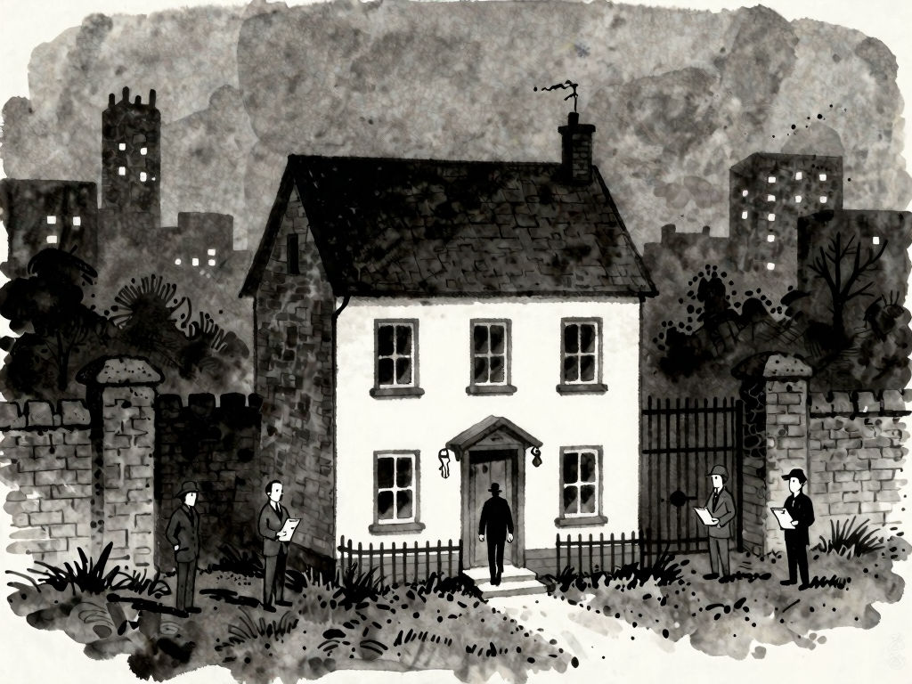
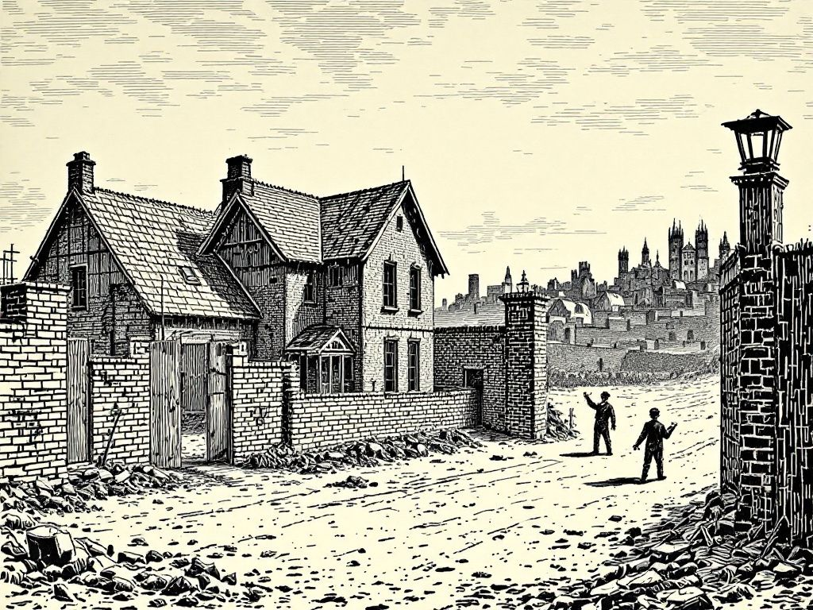
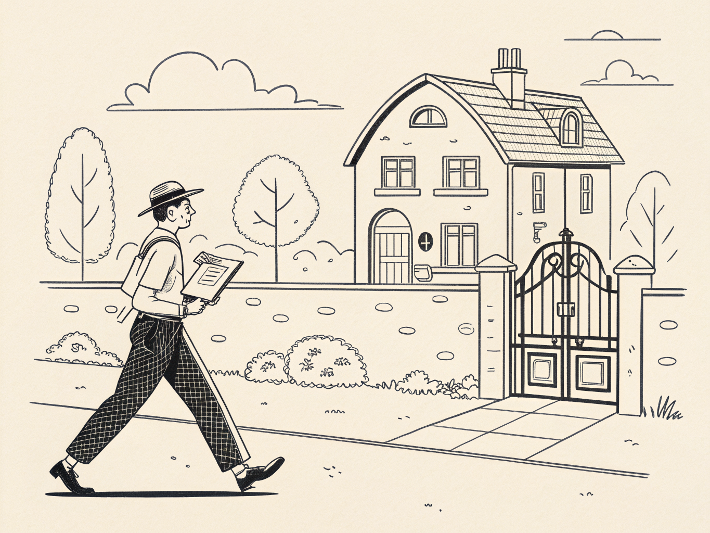
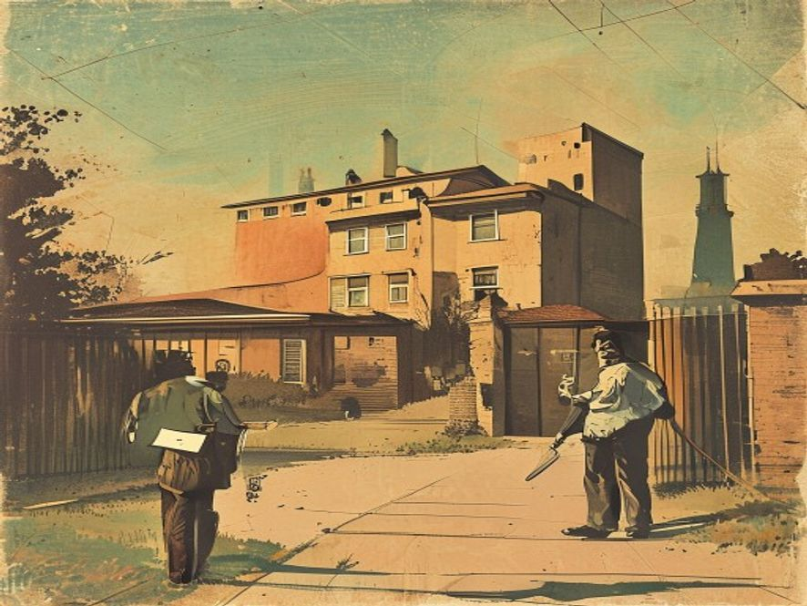
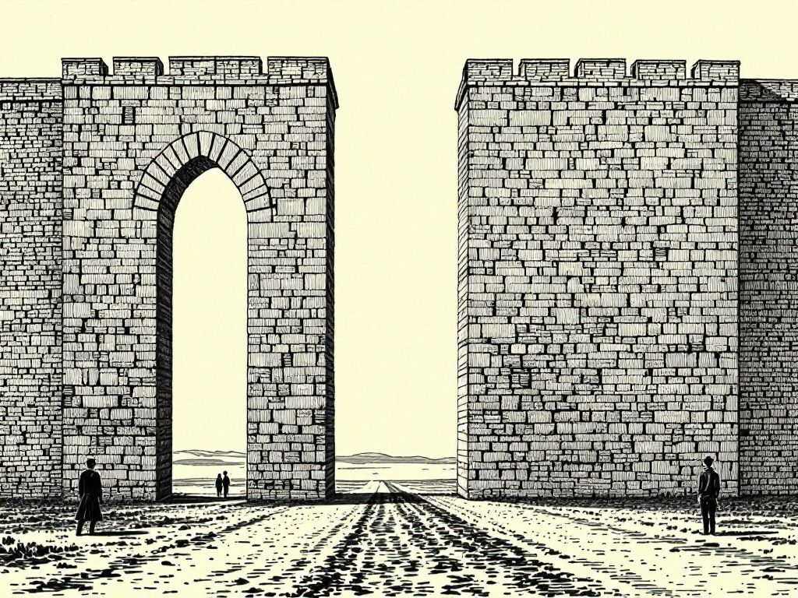

Part 7 - The Thing This Didn't Become: A Pull Request
the original: house outside the walled city
a finished house standing alone outside a walled city, the builder leaving the keys on the doorstep and walking away, clipboard-carrying inspectors guarding the city gate

A · drawthings ink-wash-dark

B · together woodcut

C · replicate continuous-line

D · pollinations kodachrome
the docent
E · together woodcutF · drawthings gag-panelG · replicate continuous-lineH · together ink-wash-dark
the unfair scale
I · together woodcutJ · drawthings gag-panelK · replicate continuous-lineL · together kodachrome
the two walls

M · together woodcutN · drawthings gag-panelO · replicate continuous-lineP · together ink-wash-dark